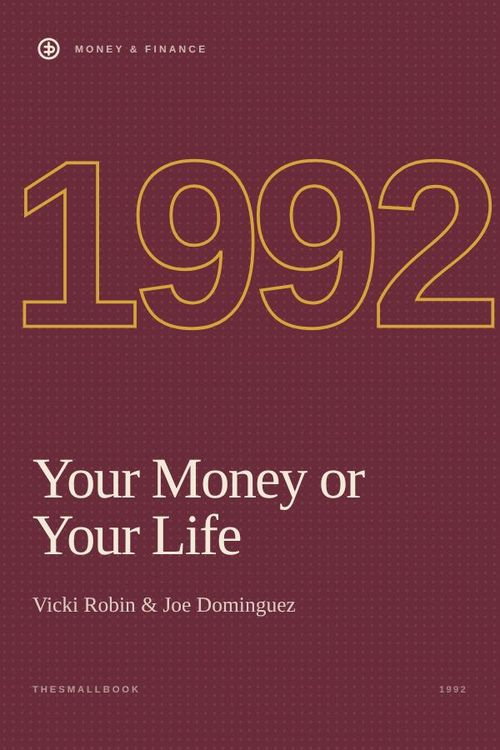

Library › Ask the Library › How do I save money every month?
How do I save money every month?
The short answer
Wealth isn't made by income, it's made by the gap between what you earn and what you spend. Automate the gap and let time compound it.
The books behind the answer

The Simple Path to Wealth
JL Collins · 2016 · 8 min · 6 lessons
Spend less than you earn, invest the rest in index funds, and let decades do the heavy lifting.
- The Gap: Spend less than you earn and invest the difference. That's the whole secret, the rest is patience.

Your Money or Your Life
Vicki Robin & Joe Dominguez · 1992 · 8 min · 6 lessons
Money is life energy. Every rupee you spend is hours of your life - spend accordingly.
- Money Is Life Energy: Every rupee is hours of your life. Ask 'is this worth my hours?' before every purchase.
The Millionaire Next Door
Thomas J. Stanley & William D. Danko · 1996 · 8 min · 6 lessons
Wealth is what you don't see: the millionaire drives a used sedan, budgets like an accountant, and out-saves everyone flashier.
- PAWs vs UAWs: The Formula That Exposes Everyone: Most millionaires drive normal cars and clip coupons. Wealth is behavior, not income.

The Psychology of Money
Morgan Housel · 2020 · 11 min · 8 lessons
Doing well with money is a soft skill: how you behave beats what you know. Every time.
- Getting Wealthy vs. Staying Wealthy: Getting rich takes risk; staying rich takes fear. Never confuse the two.
A failure that proves it
Why did MC Hammer fail?
1996 · FAME · Loss: Peak wealth ~$33M → bankruptcy with $13M debt
MC Hammer earned $33 million and kept zero. The gap, not the income, is the freedom.
The gap is the freedom. Earning $33M and keeping $0 is a richer-looking failure than earning $50,000 and keeping $15,000. Wealth is not what you make; it's what you keep when the music stops.
Also asked in Hindi and Hinglish
People also ask this as: paise kaise bachaye, salary se savings kaise karein, mahine ke kharche kaise kam karein. The answer on this page stays in simple English, and the live book can be read in Hindi or Hinglish.
Questions people ask next
Can I read this in Hindi?
Yes. This answer is written in simple English. Open any linked book and choose Hindi or Hinglish to read the full lessons in your language, with audio where available.